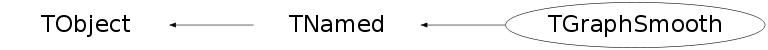

class TGraphSmooth: public TNamed
TGraphSmooth A helper class to smooth TGraph see examples in $ROOTSYS/tutorials/graphs/motorcycle.C and approx.C
Function Members (Methods)
public:
| TGraphSmooth() | |
| TGraphSmooth(const char* name) | |
| virtual | ~TGraphSmooth() |
| void | TObject::AbstractMethod(const char* method) const |
| virtual void | TObject::AppendPad(Option_t* option = "") |
| TGraph* | Approx(TGraph* grin, Option_t* option = "linear", Int_t nout = 50, Double_t* xout = 0, Double_t yleft = 0, Double_t yright = 0, Int_t rule = 0, Double_t f = 0, Option_t* ties = "mean") |
| static Double_t | Approx1(Double_t v, Double_t f, Double_t* x, Double_t* y, Int_t n, Int_t iKind, Double_t Ylow, Double_t Yhigh) |
| void | Approxin(TGraph* grin, Int_t iKind, Double_t& Ylow, Double_t& Yhigh, Int_t rule, Int_t iTies) |
| static void | BDRksmooth(Double_t* x, Double_t* y, Int_t n, Double_t* xp, Double_t* yp, Int_t np, Int_t kernel, Double_t bw) |
| static void | BDRsmooth(Int_t n, Double_t* x, Double_t* y, Double_t* w, Double_t span, Int_t iper, Double_t vsmlsq, Double_t* smo, Double_t* acvr) |
| static void | BDRsupsmu(Int_t n, Double_t* x, Double_t* y, Double_t* w, Int_t iper, Double_t span, Double_t alpha, Double_t* smo, Double_t* sc) |
| virtual void | TObject::Browse(TBrowser* b) |
| static TClass* | Class() |
| virtual const char* | TObject::ClassName() const |
| virtual void | TNamed::Clear(Option_t* option = "") |
| virtual TObject* | TNamed::Clone(const char* newname = "") const |
| virtual Int_t | TNamed::Compare(const TObject* obj) const |
| virtual void | TNamed::Copy(TObject& named) const |
| virtual void | TObject::Delete(Option_t* option = "")MENU |
| virtual Int_t | TObject::DistancetoPrimitive(Int_t px, Int_t py) |
| virtual void | TObject::Draw(Option_t* option = "") |
| virtual void | TObject::DrawClass() constMENU |
| virtual TObject* | TObject::DrawClone(Option_t* option = "") constMENU |
| virtual void | TObject::Dump() constMENU |
| virtual void | TObject::Error(const char* method, const char* msgfmt) const |
| virtual void | TObject::Execute(const char* method, const char* params, Int_t* error = 0) |
| virtual void | TObject::Execute(TMethod* method, TObjArray* params, Int_t* error = 0) |
| virtual void | TObject::ExecuteEvent(Int_t event, Int_t px, Int_t py) |
| virtual void | TObject::Fatal(const char* method, const char* msgfmt) const |
| virtual void | TNamed::FillBuffer(char*& buffer) |
| virtual TObject* | TObject::FindObject(const char* name) const |
| virtual TObject* | TObject::FindObject(const TObject* obj) const |
| virtual Option_t* | TObject::GetDrawOption() const |
| static Long_t | TObject::GetDtorOnly() |
| virtual const char* | TObject::GetIconName() const |
| virtual const char* | TNamed::GetName() const |
| virtual char* | TObject::GetObjectInfo(Int_t px, Int_t py) const |
| static Bool_t | TObject::GetObjectStat() |
| virtual Option_t* | TObject::GetOption() const |
| virtual const char* | TNamed::GetTitle() const |
| virtual UInt_t | TObject::GetUniqueID() const |
| virtual Bool_t | TObject::HandleTimer(TTimer* timer) |
| virtual ULong_t | TNamed::Hash() const |
| virtual void | TObject::Info(const char* method, const char* msgfmt) const |
| virtual Bool_t | TObject::InheritsFrom(const char* classname) const |
| virtual Bool_t | TObject::InheritsFrom(const TClass* cl) const |
| virtual void | TObject::Inspect() constMENU |
| void | TObject::InvertBit(UInt_t f) |
| virtual TClass* | IsA() const |
| virtual Bool_t | TObject::IsEqual(const TObject* obj) const |
| virtual Bool_t | TObject::IsFolder() const |
| Bool_t | TObject::IsOnHeap() const |
| virtual Bool_t | TNamed::IsSortable() const |
| Bool_t | TObject::IsZombie() const |
| void | Lowess(Double_t* x, Double_t* y, Int_t n, Double_t* ys, Double_t span, Int_t iter, Double_t delta) |
| static void | Lowest(Double_t* x, Double_t* y, Int_t n, Double_t& xs, Double_t& ys, Int_t nleft, Int_t nright, Double_t* w, Bool_t userw, Double_t* rw, Bool_t& ok) |
| virtual void | TNamed::ls(Option_t* option = "") const |
| void | TObject::MayNotUse(const char* method) const |
| virtual Bool_t | TObject::Notify() |
| void | TObject::Obsolete(const char* method, const char* asOfVers, const char* removedFromVers) const |
| static void | TObject::operator delete(void* ptr) |
| static void | TObject::operator delete(void* ptr, void* vp) |
| static void | TObject::operator delete[](void* ptr) |
| static void | TObject::operator delete[](void* ptr, void* vp) |
| void* | TObject::operator new(size_t sz) |
| void* | TObject::operator new(size_t sz, void* vp) |
| void* | TObject::operator new[](size_t sz) |
| void* | TObject::operator new[](size_t sz, void* vp) |
| virtual void | TObject::Paint(Option_t* option = "") |
| virtual void | TObject::Pop() |
| virtual void | TNamed::Print(Option_t* option = "") const |
| static void | Psort(Double_t* x, Int_t n, Int_t k) |
| static void | Rank(Int_t n, Double_t* a, Int_t* index, Int_t* rank, Bool_t down = kTRUE) |
| static Int_t | Rcmp(Double_t x, Double_t y) |
| virtual Int_t | TObject::Read(const char* name) |
| virtual void | TObject::RecursiveRemove(TObject* obj) |
| void | TObject::ResetBit(UInt_t f) |
| virtual void | TObject::SaveAs(const char* filename = "", Option_t* option = "") constMENU |
| virtual void | TObject::SavePrimitive(ostream& out, Option_t* option = "") |
| void | TObject::SetBit(UInt_t f) |
| void | TObject::SetBit(UInt_t f, Bool_t set) |
| virtual void | TObject::SetDrawOption(Option_t* option = "")MENU |
| static void | TObject::SetDtorOnly(void* obj) |
| virtual void | TNamed::SetName(const char* name)MENU |
| virtual void | TNamed::SetNameTitle(const char* name, const char* title) |
| static void | TObject::SetObjectStat(Bool_t stat) |
| virtual void | TNamed::SetTitle(const char* title = "")MENU |
| virtual void | TObject::SetUniqueID(UInt_t uid) |
| virtual void | ShowMembers(TMemberInspector& insp) |
| virtual Int_t | TNamed::Sizeof() const |
| void | Smoothin(TGraph* grin) |
| TGraph* | SmoothKern(TGraph* grin, Option_t* option = "normal", Double_t bandwidth = 0.5, Int_t nout = 100, Double_t* xout = 0) |
| TGraph* | SmoothLowess(TGraph* grin, Option_t* option = "", Double_t span = 0.67, Int_t iter = 3, Double_t delta = 0) |
| TGraph* | SmoothSuper(TGraph* grin, Option_t* option = "", Double_t bass = 0, Double_t span = 0, Bool_t isPeriodic = kFALSE, Double_t* w = 0) |
| virtual void | Streamer(TBuffer& b) |
| void | StreamerNVirtual(TBuffer& b) |
| virtual void | TObject::SysError(const char* method, const char* msgfmt) const |
| Bool_t | TObject::TestBit(UInt_t f) const |
| Int_t | TObject::TestBits(UInt_t f) const |
| virtual void | TObject::UseCurrentStyle() |
| virtual void | TObject::Warning(const char* method, const char* msgfmt) const |
| virtual Int_t | TObject::Write(const char* name = 0, Int_t option = 0, Int_t bufsize = 0) |
| virtual Int_t | TObject::Write(const char* name = 0, Int_t option = 0, Int_t bufsize = 0) const |
protected:
| virtual void | TObject::DoError(int level, const char* location, const char* fmt, va_list va) const |
| void | TObject::MakeZombie() |
private:
| TGraphSmooth(const TGraphSmooth&) | |
| TGraphSmooth& | operator=(const TGraphSmooth&) |
Data Members
public:
| enum TObject::EStatusBits { | kCanDelete | |
| kMustCleanup | ||
| kObjInCanvas | ||
| kIsReferenced | ||
| kHasUUID | ||
| kCannotPick | ||
| kNoContextMenu | ||
| kInvalidObject | ||
| }; | ||
| enum TObject::[unnamed] { | kIsOnHeap | |
| kNotDeleted | ||
| kZombie | ||
| kBitMask | ||
| kSingleKey | ||
| kOverwrite | ||
| kWriteDelete | ||
| }; |
protected:
| TGraph* | fGin | Input graph |
| TGraph* | fGout | Output graph |
| Double_t | fMaxX | Maximum value of array X |
| Double_t | fMinX | Minimum value of array X |
| TString | TNamed::fName | object identifier |
| Int_t | fNin | Number of input points |
| Int_t | fNout | Number of output points |
| TString | TNamed::fTitle | object title |
Class Charts
{kind=link}
{kind=link}
{kind=link}
{kind=link}

Function documentation
TGraph * SmoothKern(TGraph* grin, Option_t* option = "normal", Double_t bandwidth = 0.5, Int_t nout = 100, Double_t* xout = 0)
Smooth data with Kernel smoother*-*- Smooth grin with the Nadaraya-Watson kernel regression estimate. Arguments: grin: input graph option: the kernel to be used: "box", "normal" bandwidth: the bandwidth. The kernels are scaled so that their quartiles (viewed as probability densities) are at +/- 0.25*bandwidth. nout: If xout is not specified, interpolation takes place at equally spaced points spanning the interval [min(x), max(x)], where nout = max(nout, number of input data). xout: an optional set of values at which to evaluate the fit
void BDRksmooth(Double_t* x, Double_t* y, Int_t n, Double_t* xp, Double_t* yp, Int_t np, Int_t kernel, Double_t bw)
Smooth data with specified kernel*-*- *-* ================================= Based on R function ksmooth: Translated to C++ by C. Stratowa (R source file: ksmooth.c by B.D.Ripley Copyright (C) 1998) -
TGraph * SmoothLowess(TGraph* grin, Option_t* option = "", Double_t span = 0.67, Int_t iter = 3, Double_t delta = 0)
Smooth data with Lowess smoother*-*- This function performs the computations for the LOWESS smoother (see the reference below). Lowess returns the output points x and y which give the coordinates of the smooth. Arguments: grin: Input graph span: the smoother span. This gives the proportion of points in the plot which influence the smooth at each value. Larger values give more smoothness. iter: the number of robustifying iterations which should be performed. Using smaller values of iter will make lowess run faster. delta: values of x which lie within delta of each other replaced by a single value in the output from lowess. For delta = 0, delta will be calculated. References: Cleveland, W. S. (1979) Robust locally weighted regression and smoothing scatterplots. J. Amer. Statist. Assoc. 74, 829-836. Cleveland, W. S. (1981) LOWESS: A program for smoothing scatterplots by robust locally weighted regression. The American Statistician, 35, 54.
void Lowess(Double_t* x, Double_t* y, Int_t n, Double_t* ys, Double_t span, Int_t iter, Double_t delta)
Lowess regression smoother*-*-*-*-*- Based on R function clowess: Translated to C++ by C. Stratowa (R source file: lowess.c by R Development Core Team (C) 1999-2001) -
void Lowest(Double_t* x, Double_t* y, Int_t n, Double_t& xs, Double_t& ys, Int_t nleft, Int_t nright, Double_t* w, Bool_t userw, Double_t* rw, Bool_t& ok)
Fit value at x[i] *-*-*-*-*-*-*-*-*- Based on R function lowest: Translated to C++ by C. Stratowa (R source file: lowess.c by R Development Core Team (C) 1999-2001) -
TGraph * SmoothSuper(TGraph* grin, Option_t* option = "", Double_t bass = 0, Double_t span = 0, Bool_t isPeriodic = kFALSE, Double_t* w = 0)
Smooth data with Super smoother*-*-*-
Smooth the (x, y) values by Friedman's ``super smoother''.
Arguments:
grin: graph for smoothing
span: the fraction of the observations in the span of the running lines
smoother, or 0 to choose this by leave-one-out cross-validation.
bass: controls the smoothness of the fitted curve.
Values of up to 10 indicate increasing smoothness.
isPeriodic: if TRUE, the x values are assumed to be in [0, 1]
and of period 1.
w: case weights
Details:
supsmu is a running lines smoother which chooses between three spans for
the lines. The running lines smoothers are symmetric, with k/2 data points
each side of the predicted point, and values of k as 0.5 * n, 0.2 * n and
0.05 * n, where n is the number of data points. If span is specified,
a single smoother with span span * n is used.
The best of the three smoothers is chosen by cross-validation for each
prediction. The best spans are then smoothed by a running lines smoother
and the final prediction chosen by linear interpolation.
The FORTRAN code says: ``For small samples (n < 40) or if there are
substantial serial correlations between observations close in x - value,
then a prespecified fixed span smoother (span > 0) should be used.
Reasonable span values are 0.2 to 0.4.''
References:
Friedman, J. H. (1984) SMART User's Guide.
Laboratory for Computational Statistics,
Stanford University Technical Report No. 1.
Friedman, J. H. (1984) A variable span scatterplot smoother.
Laboratory for Computational Statistics,
Stanford University Technical Report No. 5.
void BDRsupsmu(Int_t n, Double_t* x, Double_t* y, Double_t* w, Int_t iper, Double_t span, Double_t alpha, Double_t* smo, Double_t* sc)
Friedmann´s super smoother *-*-*-*-*-
super smoother (Friedman, 1984).
version 10/10/84
coded and copywrite (c) 1984 by:
Jerome H. Friedman
department of statistics
and
stanford linear accelerator center
stanford university
all rights reserved.
input:
n : number of observations (x,y - pairs).
x(n) : ordered abscissa values.
y(n) : corresponding ordinate (response) values.
w(n) : weight for each (x,y) observation.
iper : periodic variable flag.
iper=1 => x is ordered interval variable.
iper=2 => x is a periodic variable with values
in the range (0.0,1.0) and period 1.0.
span : smoother span (fraction of observations in window).
span=0.0 => automatic (variable) span selection.
alpha : controls high frequency (small span) penality
used with automatic span selection (bass tone control).
(alpha.le.0.0 or alpha.gt.10.0 => no effect.)
output:
smo(n) : smoothed ordinate (response) values.
scratch:
sc(n,7) : internal working storage.
note:
for small samples (n < 40) or if there are substantial serial
correlations between observations close in x - value, then
a prespecified fixed span smoother (span > 0) should be
used. reasonable span values are 0.2 to 0.4.
current implementation:
Based on R function supsmu: Translated to C++ by C. Stratowa
(R source file: ppr.f by B.D.Ripley Copyright (C) 1994-97)
-
void BDRsmooth(Int_t n, Double_t* x, Double_t* y, Double_t* w, Double_t span, Int_t iper, Double_t vsmlsq, Double_t* smo, Double_t* acvr)
Function for super smoother *-*-*- Based on R function supsmu: Translated to C++ by C. Stratowa (R source file: ppr.f by B.D.Ripley Copyright (C) 1994-97) -
void Approxin(TGraph* grin, Int_t iKind, Double_t& Ylow, Double_t& Yhigh, Int_t rule, Int_t iTies)
-*-*-*-*-*Sort data points and eliminate double x values
TGraph * Approx(TGraph* grin, Option_t* option = "linear", Int_t nout = 50, Double_t* xout = 0, Double_t yleft = 0, Double_t yright = 0, Int_t rule = 0, Double_t f = 0, Option_t* ties = "mean")
Approximate data points*-*-*-*-*-*-*-
Arguments:
grin: graph giving the coordinates of the points to be interpolated.
Alternatively a single plotting structure can be specified:
option: specifies the interpolation method to be used.
Choices are "linear" (iKind = 1) or "constant" (iKind = 2).
nout: If xout is not specified, interpolation takes place at n equally
spaced points spanning the interval [min(x), max(x)], where
nout = max(nout, number of input data).
xout: an optional set of values specifying where interpolation is to
take place.
yleft: the value to be returned when input x values less than min(x).
The default is defined by the value of rule given below.
yright: the value to be returned when input x values greater than max(x).
The default is defined by the value of rule given below.
rule: an integer describing how interpolation is to take place outside
the interval [min(x), max(x)]. If rule is 0 then the given yleft
and yright values are returned, if it is 1 then 0 is returned
for such points and if it is 2, the value at the closest data
extreme is used.
f: For method="constant" a number between 0 and 1 inclusive,
indicating a compromise between left- and right-continuous step
functions. If y0 and y1 are the values to the left and right of
the point then the value is y0*f+y1*(1-f) so that f=0 is
right-continuous and f=1 is left-continuous
ties: Handling of tied x values. An integer describing a function with
a single vector argument returning a single number result:
ties = "ordered" (iTies = 0): input x are "ordered"
ties = "mean" (iTies = 1): function "mean"
ties = "min" (iTies = 2): function "min"
ties = "max" (iTies = 3): function "max"
Details:
At least two complete (x, y) pairs are required.
If there are duplicated (tied) x values and ties is a function it is
applied to the y values for each distinct x value. Useful functions in
this context include mean, min, and max.
If ties="ordered" the x values are assumed to be already ordered. The
first y value will be used for interpolation to the left and the last
one for interpolation to the right.
Value:
approx returns a graph with components x and y, containing n coordinates
which interpolate the given data points according to the method (and rule)
desired.
Double_t Approx1(Double_t v, Double_t f, Double_t* x, Double_t* y, Int_t n, Int_t iKind, Double_t Ylow, Double_t Yhigh)
Approximate one data point*-*-*-*-*- *-* ========================== Approximate y(v), given (x,y)[i], i = 0,..,n-1 Based on R function approx1: Translated to C++ by Christian Stratowa (R source file: approx.c by R Development Core Team (C) 1999-2001)
void Psort(Double_t* x, Int_t n, Int_t k)
static function based on R function rPsort: adapted to C++ by Christian Stratowa (R source file: R_sort.c by R Development Core Team (C) 1999-2001)
TGraphSmooth(const TGraphSmooth& )
TGraphSmooth& operator=(const TGraphSmooth& )